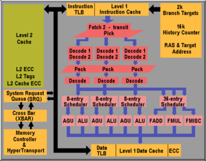
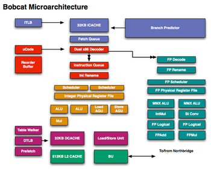
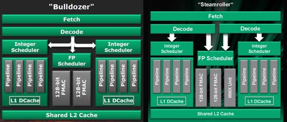
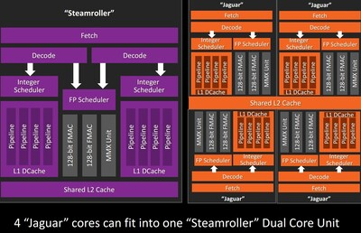

K8 / Hammer
Lançado em 2003 e descontinuado em 2014 o AMD K8 Hammer, também conhecido como SledgeHammer, é uma microarquitetura de processador criada pela AMD como sucessora da arquitetura AMD K7 Athlon. O K8 foi a primeira implementação da extensão AMD64 de 64 bits para a arquitetura do conjunto de instruções x86. O núcleo K8 é muito semelhante ao K7. A mudança mais radical é a integração das instruções AMD64 e um controlador de memória on-chip. O controlador de memória reduz drasticamente a latência da memória e é amplamente responsável pela maior parte dos ganhos de desempenho do K7 ao K8. Contava com uma performance CPU clock rate de 1600Mhz ate 3200Mhz e uma arquitetura de 64nm ate 130nm

K10
Lançado em 2007 e descontinuado em 2012 o K10, é uma
microarquitetura de microprocessador da AMD baseada na
microarquitetura K8. As suas principais diferenças e features em
relação ao K8 foram a tecnologia de fabricação de 65nm, o suporte
para padrões DRAM como DDR E DRR2 e duplicando o seu rendimento
computacional em relação ao K8. Contava com uma performance CPU
clock rate de 1700Mhz ate 3700Mhz e uma arquitetura de 65nm ate
32nm.

K10 Llnao (APU)
Lançada em 2011, esta arquitetura era usada tanto em desktops e laptops. Era baseada na arquitetura K10 com uma arquitetura de 32nm tendo de 2-4 CPU cores um design termico de 65-100W e graficos integrados baseados na Radeon HD6000 Series com suporte de DirectX 11, OpenGL 4.2 e OpenCL 1.2. Esta arquitetura foi bastante criticada pela baixa performance em termos de CPU e maior performance em termps de GPU.
Bobcat
Lançada em 2011 a arquitetura Boobcat foi criada para as APUs da propria AMD, focadas em baixo poder e no mercado low-cost como portateis e ate eletrodomesticos. Conta com um single core otimizado para um range de 10-100W, uma arquitetura de 40nm e x86.

Bulldozer / Piledriver / Steamroller / Excavator
Bulldozer
Lançada em 2011 é a arquitetura para a linha de processadores FX e Opteron para desktops e servidores, é mais um dos sucessores do K10, mas a principal diferença deste sucessor é que foi desenhado do zero nao baseado nas arquiteruras anteriores, assim conseguindo uma melhor performance-per-watt como diz a propria AMD e ate suportar a maioria das instruções implementadas nos processadores da Intel. Conta com uma arquiterura de 32nm e x86-64.
Piledriver
Lançada em 2012 é o sucessor do Bulldozer sendo a sua segunda geração com um foco para o mercado de desktop, servidores e mobile. Esta arquiterura usa o mesmo design da anterior com ganhos de 8-10% no clock speed e ganhos por volta de 15% na performance fazendo com que alguns processadores com esta arquiterura sejam 40% melhores que os anteriores. Conta com uma arquiterura de 32nm e AMD64 (x86-64).
Steamroller
Lançada em 2014 é o sucessor do Piledriver sendo a terceira geração do Bulldozer, focada nos mesmos mercados das duas gerações anteriores. A AMD estima que o Steamroller tem um aumento ate 30% das instruções por ciclo comparando com a primeira geração mantendo os altos clock rates da Piledriver e com menos consumo de energia. Isto resultando em um aumento de 9% no single-threaded e 18% no multi-threaded. Conta com uma arquiterura de 28nm e AMD64 (x86-64).
Excavator
Lançada em 2015 é o sucessor do Steamroller e a quarta e ultima geração do Bulldozer, sendo mais uma vez focada nos mesmos mercados das anteriores. Esta tem um aumento de performance de 4-15% em relação ao Steamroller e com quase o dobro da eficiencia energetica. Conta com uma arquiterura de 28nm e AMD64 (x86-64) tal como na terceira geração.

Jaguar / Puma
Jaguar
Lançada em ewm 2013 é o sucessor da arquiterura Bobcat, esta é focada no merdado de portateis, mini PCs, tabltes e micros servidores e ate consolas como por exemplo a Playstation 4 e a Xbox One que usam chips baseados nesta arquiterura. Tem um aumento de 10% de clock frequency e 15% de instruções por clock em relação a Bobcat, bem como adiciona suporte a varias novas features e suporta ate 4 CPU cores. Conta com 64KB de L1 cache por core e 1-2MB de L2 partilhada assim como um arquiterura de 28nm e AMD64 (x86-64).
Puma
Lançada em 2014 e descontinuada em 2015 foi a segunda geração da arquiterura Jaguar focando os portateis e os tabltes. Com poucos melhoramentos em relação a anterior sendo o mais notavel a redução de 38% de falhas de cores de GPU. Conta com max clock rate de 1.35 ate 2.5 GHz, com 64KB de L1 cache por core e 1-2MB de L2 partilhada, e arquiterura de 28nm e AMD64 (x86-64).

Zen / Zen+ / Zen 2
Zen
Lançada em 2017 é a arquiterura usada na linha de processadores Ryzen para desktops e EPYC para servidor, e tambem em alguns Threadrippers. Esta aquitetura foi desenvolvida apartir do zero diferente de algumas outras que foram baseadas em arquiteturas mais antigas como o K10 por exemplo. Esta aquitetura conseguio ser dar um salto em todos os aspetos pois conta com uma cache L1 de 64KB para instruções mais 32KB por core ,512KB por core de cache L2 e ainda intrudução de 8MB por quad-core, tem uma arquitetura de 14nm e AMD64 (x86-64) e ainda pode ter desde 2 cores ate 32 core.
Zen+
Lançada em 2018 é uma versão melhorada da Zen, usada nas mesmas linhas de processadores. As unicas diferenças é na sua arquitetura de 12nm e tambem que vai de 4 ate 32 cores.
Zen 2
Lançada em 2019, podemos dizer que é a segunda da arquiterura Zen esta aquitetura pode ser encontrada nas mesmas linhas de processadores mas tambem em chips usados na Playstation 5 e e na Xbox Series X e S. Conta com 64KB por core de L1 mais 512KB por core de L2 de memoria cache, tem uma arquiterura de 7nm e 6nm e pode ter ate 64 cores.
Zen 3 / Zen 4
Zen 3
Lançada em 2020 é a terceira geração da arquiterura Zen, esta terceira aquitetura tambem ta presente em CPUs mobiles. Uma das principais melhorias segundo a propria AMD é um aumento de 19% nas instruções por ciclo juntamente com um aumento de 15% em performance gaming. Conta com 64KB por core de L1 mais 512KB por core de L2 e ainda 96MB de L3 cache assim como uma arquiterura de 7nm e 6nm podendo ter ate 64 cores tambem.
Zen 4
Lançada em setembro de 2022 é a ultima arquiterura a ser lançada pela AMD e sendo tambem a quarta geração da Zen onde neste momento apenas as linhas de CPUs Ryzen e EPYC usa esta aquitetura. Conta com 64KB por core de L1 mais 1MB por core de L2 e ainda 32MB de L3 cache tendo uma aquiquetura TSMC N5 e N6.

Futuro das Arquiteturas
A AMD tem planeado ate 2024 lançar novas duas arquiteturas sendo elas a Zen5 e Zen5c sendo novas gerações da atual arquitetura Zen utilizada nos processadores Ryzen e EPYC. Estas novas gerações vão serão fabricadas em 4nm e 3nm sendo as mais pequenas ate ao momento na AMD.